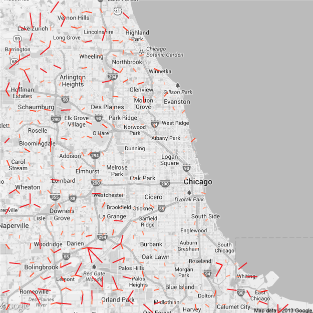
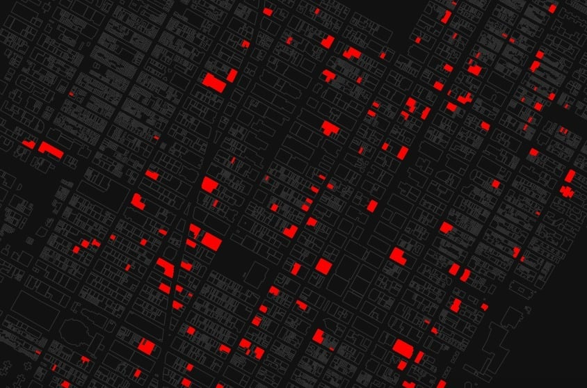
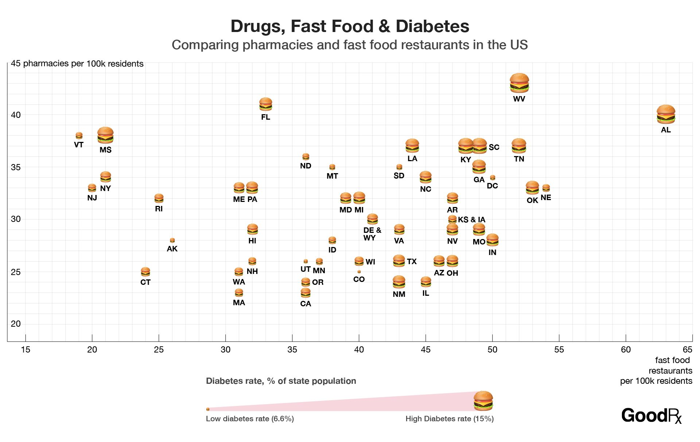
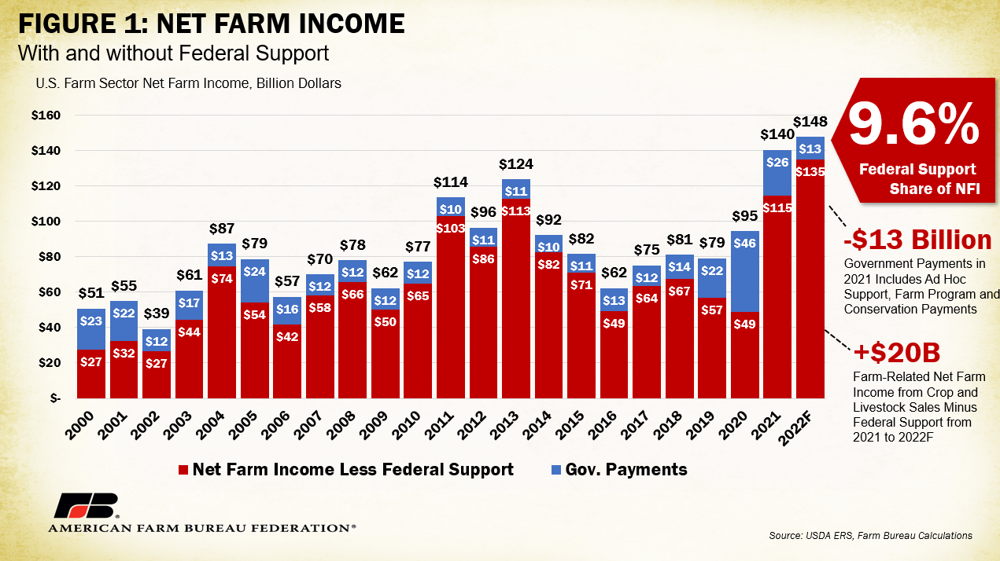

- A food desert is when 33% or more of the population is located more than 1 mile (in urban areas) or 15 miles (in rural areas) from the nearest supermarket or grocery store.
- Minority populations are more likely to live within food deserts or food insecure areas.
- The cause comes from the lasting effects of segregational practices in the United States.
Human Diversity in Agriculture and Food Deserts
Huskie Hack Team 6: Hannah Havel, Maria Luisa Rivera, Jacob Eul, David Petrovski
These are the grocery distances in Chicago with a search
every two miles, instead of 20 miles like the above views.

- “White Flight”, started in the 1950s and 1960s. The “white flight” defines the sudden widespread movement of white individuals to more racially homogeneous areas from mixed race areas.
-
Redlining, popular between 1945 and 1959. Redlining refers to the practice of withholding services
from areas that are depicted as “high risk”, which include minority groups and low-income individuals.
- While redlining is now illegal, it still has lasting effects.
- "White flight” and redlining have created food apartheid.
- Food apartheid is a systematic injustice that impacts food access.
- It is directly related to the creation of food insecurity.
-
In these affected areas, vacant storefronts are prominent.
- In low income areas, many cannot afford rising rent rates and make a profit.
- As a case study, we can look at New York City. NYC has seen a shift in the racial populations as a result of both “White Flight” and redlining in the 1950s.
-
New York City has seen a rise in vacant storefronts, 4.38% from 2019 to 2020.
- As incomes decrease, storefront vacancy increases.
-
Also in New York City, food deserts are prominent.
- More than 750,000 NYC residents live within a food desert.
-
Within these food deserts, many people have their own gardens.
- Government funding and agricultural educational programs have the opportunity to incentivize and expand on this.
- Better allocated government funding has the ability to make a change.
-
Change starts with better education.
-
Agricultural education programs such as the FFA (Future Farmers of America)
agricultural education program encourages the new generation to learn about
sustainable practices.
- These programs help willing minorities in these areas to receive vendor permits.
-
Agricultural education programs such as the FFA (Future Farmers of America)
agricultural education program encourages the new generation to learn about
sustainable practices.

-
Farmers and local farmers cooperatives will inhabit these vacant buildings.
- The vacant buildings will be used as a grocery store with rotating farmers market stalls.
-
The government can take action in different ways.
- Provide tax credits to sustainable food distribution centers
-
USDA grant applications can be made more accessible.
- The grant applications are provided in multiple languages.
- Cheaper rent for buildings who were once vacant.
-
So how do farmers benefit?
- They are provided with jobs.
- Costs associated with selling their goods are cheaper.
- Overall opportunity to profit.
-
How does the government benefit?
- Public health costs are lower as disease, obesity, and diabetes rates decrease with healthy eating.
- Boosts a once dead economy.
- Higher tax revenues as economic activity and incomes increase.

- The benefits of our solution go beyond farmers and the government.
- The supply chain is shortened, thus carbon emissions are reduced.
- Monopolies on food are discouraged and sales become more local and regional.
- Access to health and affordable food within a good distance.

-
Repurposing vacant buildings into food markets has worked before.
- In 2020, former Chicago Bears player Sam Acho raised money to buy a liquor store and turn it into a food market in West Side, Chicago, an area with higher poverty rates that experiences food insecurity.
| For more information about agricultural education programs: | For more information about federal farming grants: |
|---|---|